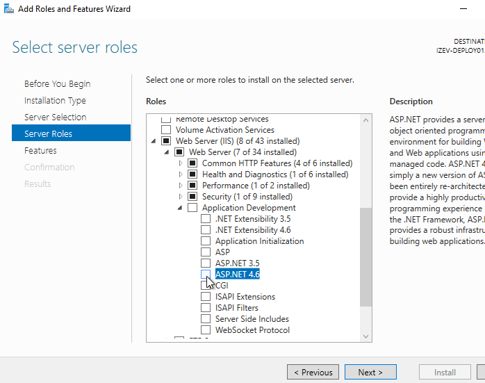
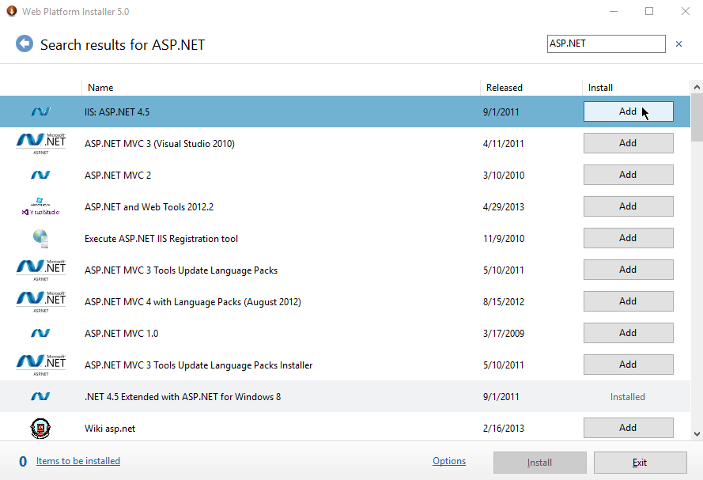
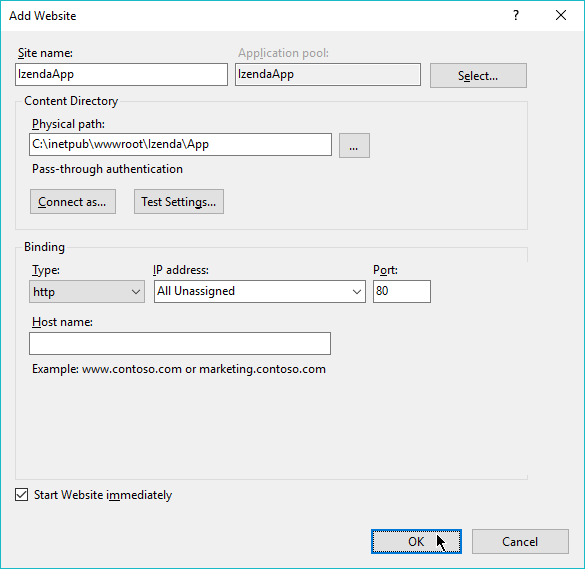
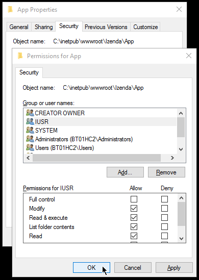

Installation Guide¶
Table of Contents
- Installation Guide
- Standalone Installation Options
- Architectural Goal
- Pre-installation Preparations
- Web Server Setup
- Izenda Installation As Two Separate Sites
- Deploying Izenda as a Virtual Directory or Application
- Troubleshooting & Verifying the Installation
- Common Izenda Standalone Installation Issues
- Additional Reference
- Next: Install Izenda System Database and Apply License
Standalone Installation Options¶
- There are two main options when deploying a “vanilla” instnace of our standalone environment.
- Installing Izenda’s front end and back end as two separate sites
- Installing Izenda’s front end and back end as virtual directories/applications under a host site
The architectural goal, pre-installation preparations, and web server setup are the same for both deployment options.
Architectural Goal¶
Fig. 19 A diagram of implementation
Pre-installation Preparations¶
The setup of Izenda requires a download of the latest version of the stand-alone front-end and the back-end and a proper web server setup. Izenda can be installed on a local machine on a Windows machine for testing purposes and is a best practice for ensuring permissions and performance can be validated locally prior to moving toward more embedded and integrated examples, but it is not recommended for live deployments.
Izenda installation packages, download them from https://downloads.izenda.com/latest/
Server
- Windows Server with Internet Information Services (IIS) Web Server.
{kind=link}
{kind=link}
Note
All of the information covered in this document can also be found in video from here
Web Server Setup¶
To ensure that Izenda works properly, your Web Server requires additional components that may not be present on your server by default.
Add Web Server Role and .NET Framework¶
Open Server Manager.
Click Quick Start, then Add roles and features to open Add Roles and Features dialog box.
Click Next to accept default selections until Select Server Roles.
Tick the Web Server (IIS) check-box.
Click Add Features in the next dialog box.
Expand .NET Framework 3.5 features and tick .NET Framework 3.5 check-box.
Expand .NET Framework 4.5 features and tick .NET Framework 4.5 check-box.
Note
For Windows Server 2016, also check ASP.NET 4.6 in this step and skip adding “IIS:ASP.NET 4.5” in next step.
Fig. 22 Install Server ASP.NET 4.6
Accept other default options then click Install.
{kind=link}
Install ASP.NET 4.5 and URL Rewrite Components¶
Open Microsoft Web Platform Installer’s download page.
This can also be opened from IIS Manager Actions panel, “Get New Web Platform Components” link.
Download and run the installer.
Open Microsoft Web Platform Installer.
Search for “ASP.NET”, select “IIS:ASP.NET 4.5” and click Add. (Not applicable for Windows Server 2016)
Similarly search for URL Rewrite 2.0 and click Add.
Click Install.
Fig. 23 Install IIS ASP.NET 4.5
{kind=link}
Application Pool Requirements¶
When creating your Izenda Sites please ensure you set the Managed pipeline mode to Integrated. Classic is not supported.
Izenda Installation As Two Separate Sites¶
The most common testing scenario places the front-end and the back-end on two separate sites. Virtual Directories and Virtual Applications deployments are possible with additional configuration and are outlined in another section below.
Extract the Izenda Front-end and Back-end packages to 2 separate folders, preferably at C:\inetpub\wwwroot\Izenda\App and C:\inetpub\wwwroot\Izenda\API.
Izenda can be installed in multiple configurations: new website, new application to an existing website, or new virtual application under an existing website:
New website
Right-click the local connection and select Add Website...
Name the website IzendaApp and accept the Application pool with the same name.
Click the ellipsis (...) button to select the location of the extracted Izenda Front-end package (C:\inetpub\wwwroot\Izenda\App).
Skip the Connect as... and Test Settings... buttons for now, since permissions have not been set for Izenda package folders.
The Port for Front-end is best kept at the default value of 80.
Optionally enter the website address into host name box, but you will have to bind that address with the correct ip in “C:\WINDOWS\System32\drivers\etc\hosts” file.
e.g. with website address www.acme.com and the ip 127.0.0.1, the following line needs to be added in hosts file:
127.0.0.1 www.acme.comClick OK to create the website.
Fig. 24 New Website
Install Izenda Back-end package similarly with a different port.
- 
Fig. 25 Folder Permissions
Set folder permissions
Right-click the newly-created website, application or virtual application and select Edit Permissions to open the folder properties.
In Security tab, click Edit to open Permissions dialog box.
Click Add then enter
IUSRthen click OK (for IIS 7 and above).For older IIS versions, use
NT AUTHORITY\\NETWORKSERVICE.Back in Permissions dialog box, tick the Modify check-box for IUSR.
Click OK to close all dialogs.
Set similar permissions for the other package.
Update the Back-end API url in Front-end package:
Edit the fileApp\izenda_config.js, replace the default value “WebApiUrl” with the correct ip and port:"WebApiUrl": "http://127.0.0.1:8888/api/",
{kind=link}
{kind=link}
This concludes the steps necessary to install Izenda using two separate websites. Please refer to the following guides below: - Troubleshooting & Verifying the Installation - Common Izenda Stand-alone Installation Issues - Editing the Configuration Files
Deploying Izenda as a Virtual Directory or Application¶
Installing Izenda as a virtual directorys will mirror the steps taken required to deploy Izenda using two separate websites but additional modifications are necessary for the front end and back end to interact correctly together.
Initial Set Up¶
- Add your Front-end package to IIS as a virtual directory. (For the purpose of this tutorial we have given it the alias of IzendaFront)
- Add your Back-end package but then convert it to an application. (For the purpose of this tutorial we have given it the alias of IzendaBack)
Within the UI Folder of your Deployment¶
Edit the izenda_config.js, point the BaseURL and the WebApiUrl to the virtual directory for your front/back-end respectively
Target code:
BaseUrl:"/<your Url here>/" WebApiUrl:"http://<Your API URL here>/api/"
Example change:
BaseUrl:"/IzendaFront/" WebApiUrl:"http://localhost:80/IzendaBack/api/"
Edit the index.html file and add the URL for the Virtual Directory as below, this should follow the ending </style> tag
Target code:
<script> window.IzendaPublicPath = '/<your Url here>/'; </script>
Example change:
<script> window.IzendaPublicPath = '/IzendaFront/'; </script>
Alter the location of the files in the index.html file to point to the new location:
Target code:
<link rel="shortcut icon" href="/<your Url here>/favicon.png"> <link href="/<your Url here>/izenda-app.css? 4676ff4fe0cdf3cd2bab" rel="stylesheet"></head> <body> <div class="container" id="izenda-root"></div> <script type="text/javascript" src="/<your Url here>/izenda-vendors.js?4676ff4fe0cdf3cd2bab"></script> <script type="text/javascript" src="/<your Url here>/izenda_app.js?4676ff4fe0cdf3cd2bab"></script> </body>
Example change:
<link rel="shortcut icon" href="/IzendaFront/favicon.png"> <link href="/IzendaFront/izenda-app.css? 4676ff4fe0cdf3cd2bab" rel="stylesheet"></head> <body> <div class="container" id="izenda-root"></div> <script type="text/javascript" src="/IzendaFront/izenda-vendors.js?4676ff4fe0cdf3cd2bab"></script> <script type="text/javascript" src="/IzendaFront/izenda_app.js?4676ff4fe0cdf3cd2bab"></script> </body>
Update the web.config file in the UI folder
Target code:
<action type="Rewrite" url="/<your Url here>/" />
Example change:
<action type="Rewrite" url="/IzendaFront/" />
Within the API Folder of your Deployment¶
Update the Web.config file
Target code:
<httpHandlers> <add verb="*" type="Nancy.Hosting.Aspnet.NancyHttpRequestHandler" path="/<Your API URL here>/api/*" /> </httpHandlers> <handlers> <add name="Nancy" verb="*" type="Nancy.Hosting.Aspnet.NancyHttpRequestHandler" path="/<Your API URL here>/api/*"/> </handlers>
Example change:
<httpHandlers> <add verb="*" type="Nancy.Hosting.Aspnet.NancyHttpRequestHandler" path="/IzendaBack/api/*" /> </httpHandlers> <handlers> <add name="Nancy" verb="*" type="Nancy.Hosting.Aspnet.NancyHttpRequestHandler" path="/IzendaBack/api/*"/> </handlers>
This concludes the steps necessary to install Izenda using virtual directories/applications. Please refer to the following guides below: - Troubleshooting & Verifying the Installation - Common Izenda Stand-alone Installation Issues - Editing the Configuration Files
Troubleshooting & Verifying the Installation¶
To ensure that your API site is running correctly, navigate to http://YOUR_API_URL/api/404 (e.g. http://localhost:8080/api/404)
If your API is installed correctly, you should see the graphic below:
Fig. 26 Successful Connection to API displays a stylized 404 error
Navigate to the API folder, you should see a ‘logs’ folder with with at least one log file. If you do not see the folder and/or files, verify that the application pool and/or web site user have write permissions to the API folder.
Common Izenda Standalone Installation Issues¶
- ASP.NET
Izenda’s API is a .NET web application compatible with .NET 4.0 and higher.
For .NET web applications to run through IIS you need to install IIS ASP.NET through your server’s Add Roles and Feature Wizard, or through the IIS Web Platform Installer.
Without these features installed you may encounter errors like the following:
HTTP Error 500.xx – Internal Server Error
The requested page cannot be accessed because the related configuration data for the page is invalid.
- URL Rewrite Module
Izenda’s Stand-alone UI web.config makes use of the IIS URL Rewrite Module for routing.
You’ll install this module through the IIS Web Platform Installer.
Without this feature installed you may encounter errors like the following navigating to the UI.
Configuration Error
An error occurred during the processing of a configuration file required to service this request.
- API Permissions
If you can get Izenda running and see the UI, but get an error after setting your Izenda Configuration Database Connection String, you may be encountering permission issues at the API level.
Izenda’s API needs proper write permissions to its own directory to create the izendadb.config file and generate log files.
Often there are issues using just the default IUSR or NT AUTHORITY\NETWORKSERVICE roles to provide these permissions.
Try the following to get past the issue:
Give the IIS Application Pool Full Access to the API directory.
You can see the API’s Application Pool name just by looking at the application’s basic settings in IIS.
IIS basic settings
You can then use that name in setting your folder permissions as you see below.
IIS AppPool\YouApplicationPoolNameIIS Select Application Pool name
After giving this IIS Application Pool Full Access rights, you can restart the API, and try using the UI again.
{kind=link}
{kind=link}
Microsoft Visual C++ 2010 Redistributable for Izenda’s Oracle Drivers
Izenda’s Oracle Drivers utilize the Microsoft Visual C++ 2010 Redistributable.
These can be installed by downloading the installer from Microsoft:
Microsoft Visual C++ 2010 Redistributable Package (x64)Without this dependency installed you may encounter errors like the following.
Could load file or assembly ‘Oracle.ManagedDataAccess’ or one of its dependencies. An attempt was made to load a program with an incorrect format.
An unhandled exception occurred during the execution of the current web request.
- Virtual Directory vs Individual Sites
There are two different ways to install Izenda Stand-alone, as two separate applications with distinct ports or domains or as one application with a virtual directory.
Concepts from these two separate installation options cannot be mixed together without creating issues. Make sure to follow just one guide or the other:
Once you have followed one set of instructions to completion, you can move on to Troubleshooting & Verifying the Installation guides, and Install Izenda System Database and Apply License guides.
- The izenda.config.js File
You’ll need to edit the izenda_config.js file during installation and it’s important to use fully qualified URLs for the WebApiURL.
For example, a fully qualified URL to the API should include
http://at the beginning and/api/at the end. It should look something like what you see below. For Izenda Installation as Two Separate Sites this is all you need to edit.
WebApiUrl:"http://192.168.45.37:8200/api/"For Deploying Izenda as a Virtual Directory or Application you need to edit the BaseUrl. This should look like the following, per the instructions with the trailing slash.
BaseUrl:”/IzendaDirectory/”If you don’t properly configure this file you may be able to see the Izenda login UI, but not get directed to the setup UI, or you may see many console errors in your browser’s dev tools.
- Misconfigured Connection Strings and Difficulty Connecting
Izenda supports many different database types, and has specific drivers for these specific database types.
Make sure you’ve selected the right Data Server Type in the dropdowns near Connection String UIs.
Select Data Server Type
Make sure you’ve used the proper syntax for your Connection String.
Certain characters may cause issues when used in Connection Strings. Avoid using characters such as semicolons, single-quotes, or double-quotes
MSSQL, PostgreSQL, Oracle, and MySQL Connection Strings are all formatted a little different, provide different options, and expect different syntaxes. Use resources like ConnectionStrings.com to make sure you’re including the right details, options, and port numbers:
- MSSQL
- PostgreSQL
- Oracle
- MySQL
Make sure you’ve allowed the connection through your Network Security.
If you use custom ports for your database you’ll need to factor that into both the web server running Izenda as well as your Connection String.
If you use Azure or AWS you may need to add the web server running Izenda to your Network Security Groups, or whitelist the IP address so that it can connect to your database.
Make sure you’ve given your Connection String user proper permissions.
Double check that the connection string user has permissions to the databases and schemas you want to connect to. You’ll need to give read/write permissions to the user for the Izenda Configuration Database. Izenda cannot get around your RDBMS security, as you might expect.
Try connecting with another tool or application.
If you’re continuing to have issues with a Connection String you may want to ensure that it’s an Izenda specific problem before reaching out.
Try using your RDBMS management tools to connect to the database with the same user, and preferably from the same server, that you are trying to connect with using Izenda.
{kind=link}
Additional Reference¶
- Understanding Configuration vs. Reporting Connection Strings
The Izenda Configuration Database Connection String and Reporting Data Source Connection Strings are set in two different places, it totally separate UIs or underlying APIs.
Izenda Configuration Database Connection String
The Izenda Configuration Database Connection String will be set in the Settings page under the System DB & License tab.
Be very careful when setting and/or changing this connection string!
This connection string will point Izenda to a database where it can create its schema and store report metadata, dashboard metadata, data model metadata, Tenant, Role, and User metadata, and much more.
If you set this to an existing database you will end up with Izenda specific tables in your schema, it’s usually best to use a separate empty database for the Izenda Configuration Database unless you’re comfortable with mixing Izenda’s storage schema with your database schema.
Reporting Data Source Connection Strings
Reporting Data Source Connection Strings will be set in the Settings page under the Data Setup/Connection String tab.
After connecting Izenda will query the database to establish the available data source listing, so that you can choose specific objects to move into the visible data sources.
These selected objects can then be further modeled upon, aliased, secured, and exposed to end-users within report designers.
Do not delete Connection Strings if you simply need to change connection strings to another database with a similar schema, or if you need to add new objects to the available/visible data source lists, you can change/rebuild Connection Strings or press reconnect and refresh the schema.
Deleting and recreating Connection Strings will break your reports and dashboards, where just resetting the Connection Strings or reconnecting generally will not.
- Editing Configuration Files
Additional features can be set for a customized deployment experience. For live sites, several of the features below are recommended.
Change the Back-end passphrase, which is the key to encrypt and decrypt data in Izenda.
Enter a 29-character value into the value of this key:
<appSettings>,<add key="izedapassphrase" value="" />
Warning
This passphrase cannot be changed afterwards since already encrypted data cannot be decrypted with another passphrase.
Recommended: add security configurations
Optionally change the default Back-end path
/api/e.g. change the path to
/rest/- Edit the file
API\Web.config, replace the default value “api” - with the new value at the following places:
<appSettings>,<add key="izedaapiprefix" value="api" /><system.web>,<httpHandlers>,<add verb="*" type="Nancy.Hosting.Aspnet.NancyHttpRequestHandler" path="api/*" /><system.webServer>,<handlers>,<add name="Nancy" verb="*" type="Nancy.Hosting.Aspnet.NancyHttpRequestHandler" path="api/*" />
- Edit the file
- Also edit the file
App\izenda_config.js, replace the default - value “api” with the new value at the following places:
"WebApiUrl": "http://127.0.0.1:8888/api/",
- Also edit the file
Optionally change Izenda log file settings
Change the default log file location in
<log4net ..>,<appender name="RollingFileAppender" ..>,<file value="logs\izenda-log.log" />, which resolves to C:\inetpub\wwwroot\Izenda\API\logs in a typical installation.Change how the log files are archived/rotated/rolled in
<log4net ..>,<appender name="RollingFileAppender" ..>.The default setting is to keep maximum 1000 last files of 5MB each every day. See other examples at log4net document.
Enable folder compression: log file content is all text and will compress up to 2% of the original size.
- Right-click on the folder (C:\inetpub\wwwroot\Izenda\API\logs) and click Properties.
- Click Advanced button in General tab.
- Tick Compress contents to save disk space check-box, then click OK twice.
- Select either option: this folder only, or this folder, subfolders and files then click OK.
- Confirm the compression status: the folder will have blue name, or have two arrows added at the top right of its icon (from Windows 10).
Optionally enter settings for EVO PDF Azure option, or accept the default values to use the local embedded library.
- Under
<configuration>, find or add the following section: <evoPdfSettings cloudEnable="false"> <azureCloudService server="" port="" servicePassword="" /> </evoPdfSettings>
- Under
Set
cloudEnable="true"to use the Azure option, then enter the server IP, port and password.